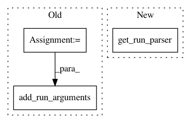

21468c4d99273dad4f8212e9b447e4ca5dcd21c4,sos/__main__.py,,sosrun,#,1015
Before Change
def sosrun():
import argparse
parser = argparse.ArgumentParser(description="""Execute a sos script""")
add_run_arguments(parser)
args, workflow_args = parser.parse_known_args()
cmd_run(args, workflow_args)
def main():
After Change
// this is the sos-runner command
//
def sosrun():
parser = get_run_parser()
parser.prog = "sos-runner"
args, workflow_args = parser.parse_known_args()
cmd_run(args, workflow_args)
In pattern: SUPERPATTERN
Frequency: 3
Non-data size: 3
Instances
Project Name: vatlab/SoS
Commit Name: 21468c4d99273dad4f8212e9b447e4ca5dcd21c4
Time: 2016-12-02
Author: ben.bog@gmail.com
File Name: sos/__main__.py
Class Name:
Method Name: sosrun
Project Name: vatlab/SoS
Commit Name: 21468c4d99273dad4f8212e9b447e4ca5dcd21c4
Time: 2016-12-02
Author: ben.bog@gmail.com
File Name: sos/jupyter/sos_executor.py
Class Name:
Method Name: runfile
Project Name: vatlab/SoS
Commit Name: 21468c4d99273dad4f8212e9b447e4ca5dcd21c4
Time: 2016-12-02
Author: ben.bog@gmail.com
File Name: sos/__main__.py
Class Name:
Method Name: main